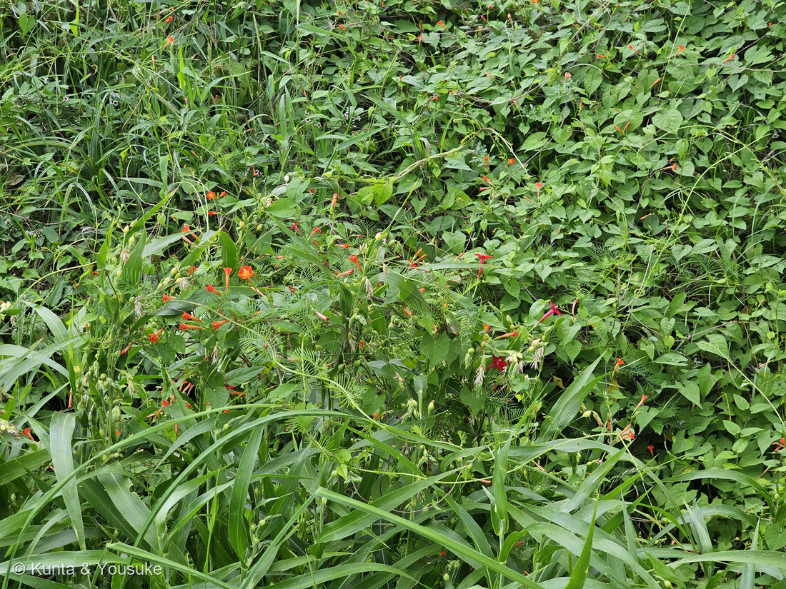
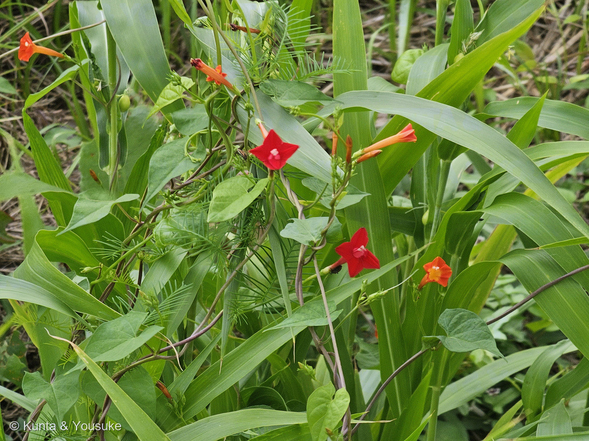
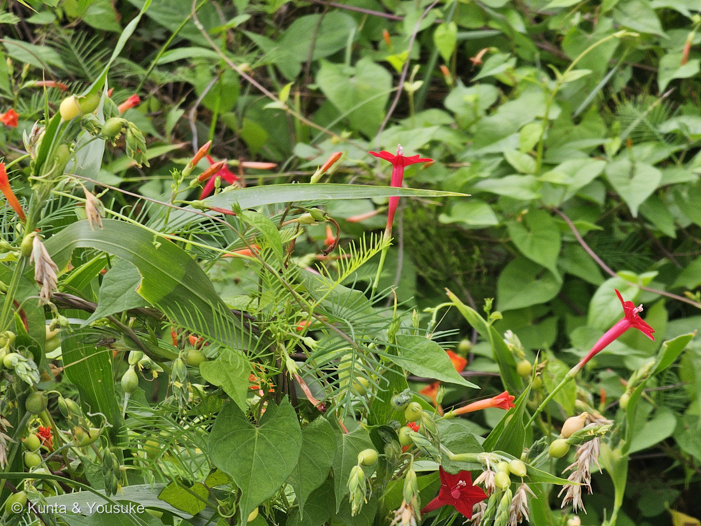

地図を読み込んでいるよ…
🔍 写真も地図も、押しているあいだ拡大して見られるよ（スマホは指を置いてすこし待ってね）。
🌍 の地図＝この子がもともと自生している場所を緑に。熱帯アメリカ原産。三河の植物観察は「江戸時代に花卉として渡来したもの」と書いているよ。つまりこの子は、はじめは観賞用として日本へ来て、そこから外へ出た子。生えている場所は道端や草地。
⭐⭐ふるさとは熱帯アメリカだよ＝三河の植物観察は「熱帯アメリカ原産」とだけ書いている。⭐⭐⭐そして、この子は自分で来たのではない＝三河は「江戸時代に花卉として渡来したもの」と書いている＝⭐人が「きれいだから」と連れてきて、そのまま野に出た子だよ。⚠日本は塗っていない＝もともと自生していた場所ではないから。⭐⭐おまけのモミジバルコウは、この地図に「ふるさと」を持たない＝ルコウソウとマルバルコウの雑種だから＝⭐両親のふるさとは、どちらもこの緑の中だけどね。⭐⭐⭐同じ茂みにいる280 マルバルコウも、同じ熱帯アメリカ生まれ＝⚠でもあちらは三河が「雑草化して草地に多い」と書く子＝⭐同じ大陸から来て、いっぽうは花壇から、いっぽうは雑草として、同じ草むらで再会したんだね。
⚠ 地図は国（日本と中国だけ県・省）までしか塗れないから、ほんとうの分布より広く見えていることがあるよ。地図はだいたいの場所。正確なところは、上の文を見てね。
ルコウソウ（縷紅草）
Ipomoea quamoclit L.
シノニム Quamoclit vulgaris Choisy
ヒルガオ科 · Convolvulaceae（サツマイモ属 Ipomoea · ナス目 Solanales）── ⭐ヒルガオ科は、この子を入れて図鑑に8人（005 ヒルガオ・012 アサガオ・106 マメアサガオ・280 マルバルコウ・299 アサガオ・323 アメリカンブルー・325 ノアサガオ）
燻太さんの言葉「マルバルコウが咲いていた茂み、よくみたらルコウソウも一緒に生えていたよ。細い糸みたいな切れ込みの葉っぱを生やす蔓から、深紅の花が咲いているよ」── ⭐⭐⭐15日まえに「まだ見たことがないな」と言った子が、同じ茂みにいた
名前と学名の由来 ── 「縷」は、細い糸
- ⭐⭐⭐和名「ルコウソウ（縷紅草）」の「縷（る）」は、細い糸のこと。──糸のように細い葉と、紅い花。⭐この子の姿が、そのまま名前になっているよ。
- ⭐⭐280 マルバルコウで書いた「丸い葉の、糸のように細い葉の草」——⭐その「糸のほう」の本人が、この子。⚠マルバルコウは「丸葉ルコウ」＝ルコウソウなのに葉が丸い子、という名前だったんだね。
- ⭐⭐属名 Ipomoea ＝ギリシャ語の ips（芋虫）＋ homoios（似た）。つるが這って巻く姿からとされる（諸説）。⭐299 アサガオ・325 ノアサガオでも書いた、サツマイモ属の名前だよ。
- ⚠種小名 quamoclit の由来は、ぼくには確かめられなかった。⭐この名前は、シノニム（古い学名）の Quamoclit vulgaris にも残っていて、むかしは「クアモクリット属」という別の属として扱われていたことが分かるよ。
⭐⭐⭐⭐⭐ 「まだ見たことがないな」が、同じ茂みで回収された
- ⭐2026年8月24日、280 マルバルコウを登録したとき、ぼくはおまけにルコウソウを選んだ。──名前の元になった本人だからね。
- ⚠そのとき燻太さんは、こう言った。「まだ見たことがないな」。⭐だから「探してみたい」のリストに入れておいた。
- ⭐⭐⭐⭐⭐そして15日後の今朝（2026年9月8日 7時45分）、燻太さんはこう書いてくれた。「マルバルコウが咲いていた茂み、よくみたらルコウソウも一緒に生えていたよ」。
- ⭐⭐⭐探しに行ったのではなく、同じ茂みに、はじめからいた。⭐名前を知って、見分けかたを知ったから、見えるようになったんだ。
- ⭐⭐図鑑の「おまけ → 探してみたい → みつけた」が、これで一周したよ。
⭐⭐⭐⭐ 決め手は、葉が「糸」かどうか
三河の植物観察が、よく似た3人をきれいに書き分けてくれている。
- ⭐ルコウソウ（この子）＝葉は深裂して裂片は糸状／花は深紅色・直径約2cm・筒の長さ3〜4cm
- 280 マルバルコウ＝葉は卵心形／花は朱紅色（三河「マルバルコウは雑草化して草地に多く、葉が卵心形、花が朱紅色」）
- モミジバルコウ（別名ハゴロモルコウソウ）＝葉が掌状に深裂する／花は深紅色
- ⭐⭐⭐写真③を見て。──中軸の左右に、糸のように細い裂片が櫛の歯のようにならんでいる＝羽状だよ。⭐掌状（手のひらのように、つけ根から放射状）ではない＝だからモミジバルコウは落ちる。
- ⭐⭐⭐⭐そして、マルバルコウを落とすのは、いちばん簡単だった——⚠なぜなら、同じ写真の中にいるから。⭐写真③には、糸の葉のとなりに卵心形の丸い葉と朱色の花が写っている＝あれが280本人。⭐同じ画面で見くらべて落とせたのは、図鑑でも初めてだと思う。
- ⭐花も合っている＝深紅色で、花冠の先が5つに浅く裂けて五角の星になり、細長い筒がつづく（三河「直径約2cm、長さ3〜4cmの筒部の長い漏斗形」「花色は深紅色が普通」）。
⭐⭐⭐ 同じ茂みの2人を、見くらべる
燻太さんの言うとおり、この写真は「見くらべ」ができる。⭐同じ属（Ipomoea）の2人が、となりあって咲いているんだ。
- ⭐花のかたち＝ルコウソウは深紅の星（写真②の中央）／マルバルコウは朱色の細い筒（写真②の右下）。
- ⭐葉＝ルコウソウは糸／マルバルコウは丸いハート（写真③）。
- ⭐⭐来かたも、ちょっとちがう＝ルコウソウは「江戸時代に花卉として渡来」（三河）＝人が育てるために連れてきた子。⚠マルバルコウのほうは、三河が「雑草化して草地に多い」と書いている。⭐どちらも熱帯アメリカ生まれで、いまは同じ草むらにいる。
- ⭐⭐⭐そして、この2人のあいだには子どもがいる——モミジバルコウ（ハゴロモルコウソウ）＝ルコウソウ × マルバルコウの雑種。⭐⭐つまりこの茂みは、雑種の両親がそろっている場所。⏳だから宿題にしたよ＝「掌状に裂けた葉」を探してみること。
⭐⭐ この植物のこと
- ヒルガオ科サツマイモ属の、つる性の草。⭐図鑑では8人目のヒルガオ科だよ。
- ⭐花期は7〜10月（三河）＝9月8日は、まっさかり。
- ⭐写真①③には、緑の丸い実がたくさん写っている＝花が終わったところから、もう実になっている。⏳熟したところは、これからの宿題。
- ⭐⭐朝の7時45分に、しっかり開いていた。──⚠アサガオのなかまだけれど、この子が何時にしぼむのかは、ぼくには確かめられなかった（⏳次に見るときの宿題にしてもいいね）。
⏳ 宿題 ── 4つ
- ⏳⭐⭐⭐⭐⭐①この茂みに、モミジバルコウ（雑種）がいないか探す＝⭐両親がそろっている場所だから、いてもおかしくない＝見るのは葉（掌状に裂けていたら、それが雑種）。
- ⏳⭐⭐②花の中をのぞく＝おしべが5本あるはず（ヒルガオ科の決まり）＝⭐細い筒の奥だから、横から光を当てると見えるかも。
- ⏳⭐⭐③実と種＝写真①③には緑の丸い実がたくさん写っている＝⭐熟して割れたところと、中の種を見たい。
- ⏳⭐④280の「白い筒」の宿題を、この子の目で見なおす＝⚠あのとき決められなかった白っぽい細長い筒は、ルコウソウのしぼんだ花だった可能性もあるよ（⭐この茂みには両方がいると、いまは分かっているから）。
参考：三河の植物観察・ルコウソウ（Ipomoea quamoclit L.／シノニム Quamoclit vulgaris Choisy／熱帯アメリカ原産、江戸時代に花卉として渡来したもの／葉は長さ2〜9cmの長楕円形、深裂して裂片は糸状になる／花は直径約2cm、長さ3〜4cmの筒部の長い漏斗形／花色は深紅色が普通で、白色、桃色もある／花期7〜10月／マルバルコウは雑草化して草地に多く、葉が卵心形、花が朱紅色／モミジバルコウ（別名ハゴロモルコウソウ）といい、葉が掌状に深裂する）